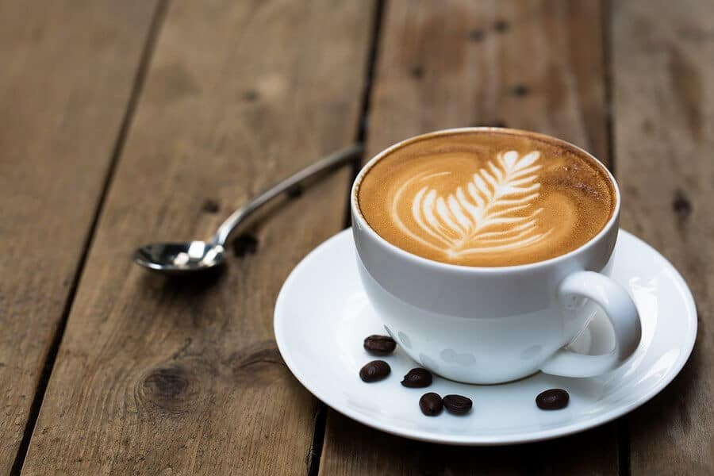

LATTE LÀ GÌ – CÁCH PHA LY CAFE LATTE NHƯ THẾ NÀO

Latte là gì? Nguồn gốc cà phê Latte
Cafe Latte là gì?
Về cơ bản, Latte và Cappuccino hoàn toàn giống nhau về thành phần nguyên liệu. Chúng gồm 3 phần chính là Cafe Espresso pha với lượng nước gấp đôi thông thường (Espresso Lungo), sữa nóng và sữa sủi bọt. Điểm khác biệt chính là lượng sữa nóng và bọt sữa của Cappuccino có tỉ lệ bằng nhau. Trong khi đối với cafe Latte, lượng bọt sữa chỉ bằng một nửa sữa nóng.
Các bước pha cafe Latte
Các nguyên liệu để chuẩn bị cho một ly cafe Latte khá đơn giản. Gồm có 3 thành phần cơ bản: cafe Espresso, được pha từ cafe nguyên chất, pha với lượng nước gấp đôi thông thường (Espresso Lungo), sữa nóng và sữa sủi bọt.
Chuẩn bị cà phê
- Chuẩn bị 8 – 10gr bột cà phê xay mịn.
- Sau khi xay xong, cần pha ngay để tránh cà phê bị mất hương vị.
- Sử dụng tamper nén để nén cafe cho chặt.
- Cho cafe đã nén vào máy pha, bắt đầu pha chế để cho ra được 35ml cà phê Espresso.
Chuẩn bị sữa
- Bạn cần chuẩn bị khoảng 250 – 300 ml sữa tươi tiệc trùng, không đường.
- Đánh sữa nóng bằng vòi đánh sữa ở nhiệt độ 65 độ C trong khoảng 10 – 15 giây.
Tạo hình cho cafe
- Chọn loại cốc dày bằng sứ, có dung tích vào khoảng 300ml.
- Cho cafe Espresso vào cốc trước. Sau đó cho sữa nóng vào.
- Lưu ý giảm khoảng cách giữa ca sữa và tách cà phê khi đến phần tạo hình.
- Các hình ảnh trên ly cafe có thể là hình trái tim, hình chiếc lá, hoặc các hình ảnh phức tạp hơn.
Barista có thể sáng tạo ra nhiều hình ảnh nghệ thuật khác nhau trên ly cà phê.
Các tiêu chí để đánh giá một ly cà phê Latte
Một ly cafe Latte đúng chuẩn là phải vừa đậm đà vị cà phê, vừa béo ngậy vị sữa và đặc biệt có tạo hình đẹp mắt. Tức là phải đáp ứng yêu cầu về cả vị giác lẫn thị giác. Do đó, các Barista phải tuân thủ nghiêm ngặt các nguyên tắc trong cách làm cafe Latte. Đó là đảm bảo tỉ lệ sữa và cafe. Cùng với sự khéo léo trong lúc đổ sữa lên bề mặt sao cho sữa phải nổi lên. Kết hợp sự tỉ mỉ khi tạo ra những hình nghệ thuật bắt mắt.
Có 2 kiểu vẽ Latte Art chính là rót tự do và khắc. Rót tự do phổ biến hơn vì dễ làm và đòi hỏi ít thời gian thực hiện. Cách tạo hình này dành cho các Barista mới vào nghề. Trong khi đó các Barista nhiều kinh nghiệm sẽ chọn cách tạo hình nghệ thuật bằng bút vẽ.
Cafe Near You đã khái quát thông tin cơ bản về dòng cà phê Latte, cách pha chế và cách vẽ hình – Art. Cafe Latte ngoài đam mê cà phê nó còn là một nghệ thuật. Hy vọng qua bài viết các bạn có thêm động lực để pha chế cho mình một ly cà phê ưng ý.